Motion design
Nobody New
This is where I learned to work with motion. I chose a song I feel a real connection with and turned every line of it into movement: words that grow, slide and break apart, cut-out photos drifting over paper, light and flowers.
The clip lives in four colours only, black, white, red and blue, the same colours The Marías keep coming back to in their own photography.
The clip is shown here without the music. Listen to Nobody New by The Marías on YouTube and play them side by side.
The band
Dreamy, calm and bilingual
The Marías make music somewhere between indie pop, soul and dream pop: calm, dreamy and with an atmosphere all of its own. They sing in English as well as in Spanish, which makes their sound recognisable from the very first note.
What draws me in is that quiet, almost lonely mood. It is music to sink into for a while, without it ever asking anything of you.
The song
Letting go, or not
Nobody New is about not being able to let go of someone, long after the relationship has ended. María sings it in a very calm, restrained way: no drama, just honesty.
That mix of subject and atmosphere makes it one of their best tracks for me, and it set the tone for the whole clip: slow, soft movements with sudden bursts of colour.
Aquí estoy, there's nobody new
Frame by frame
Every line its own scene
The Spanish lines get bold, moving type and cut-out portraits, the English ones turn calmer and darker. A few moments from the clip:
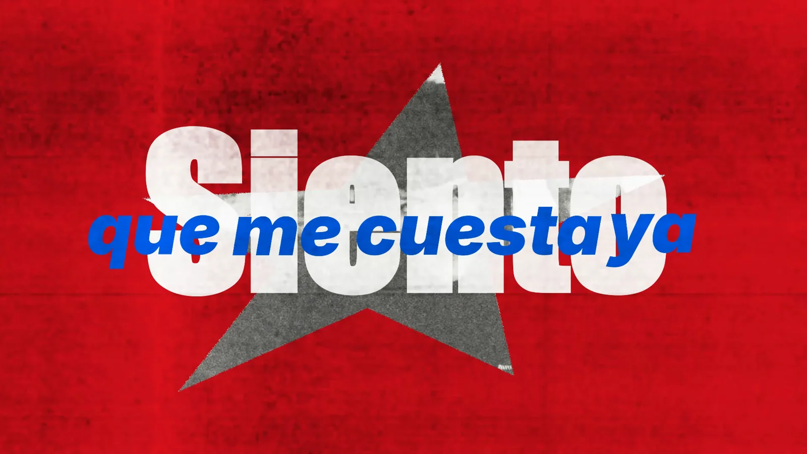
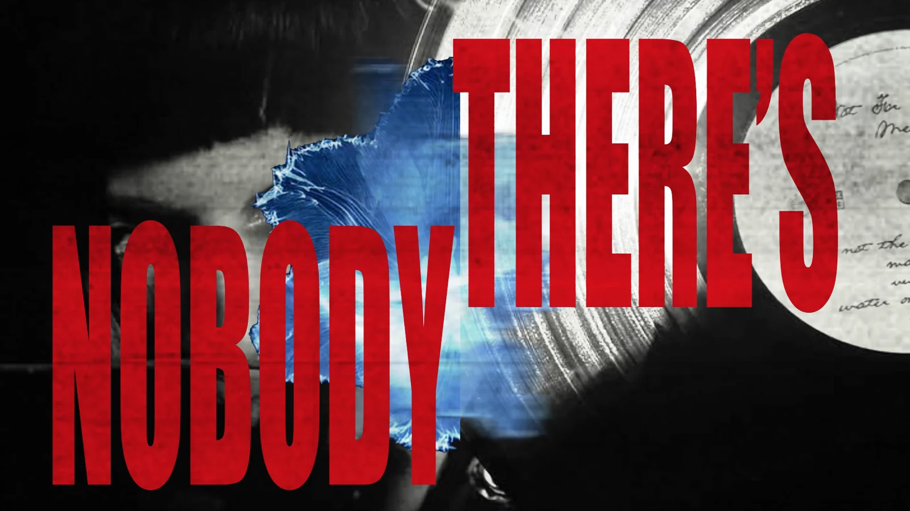
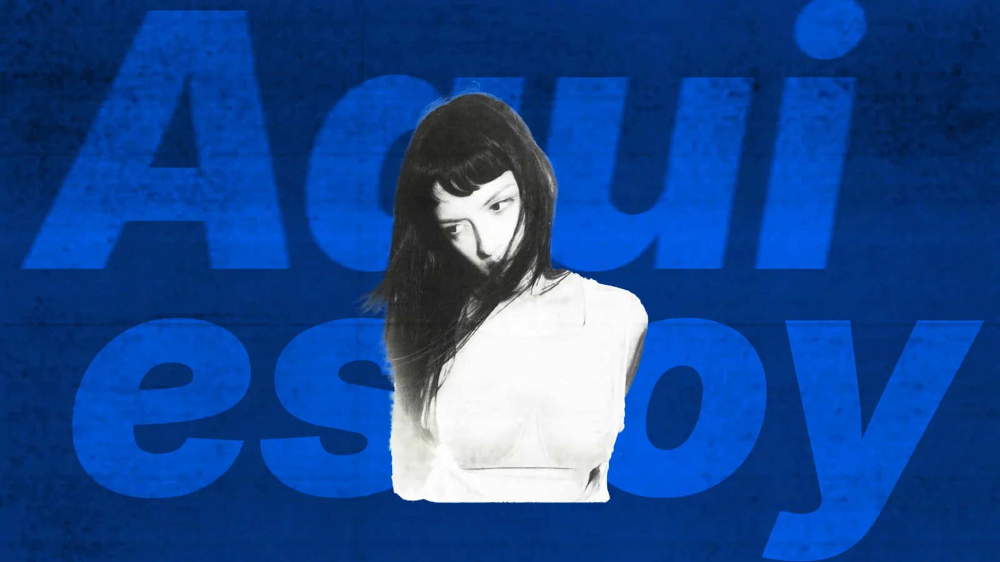
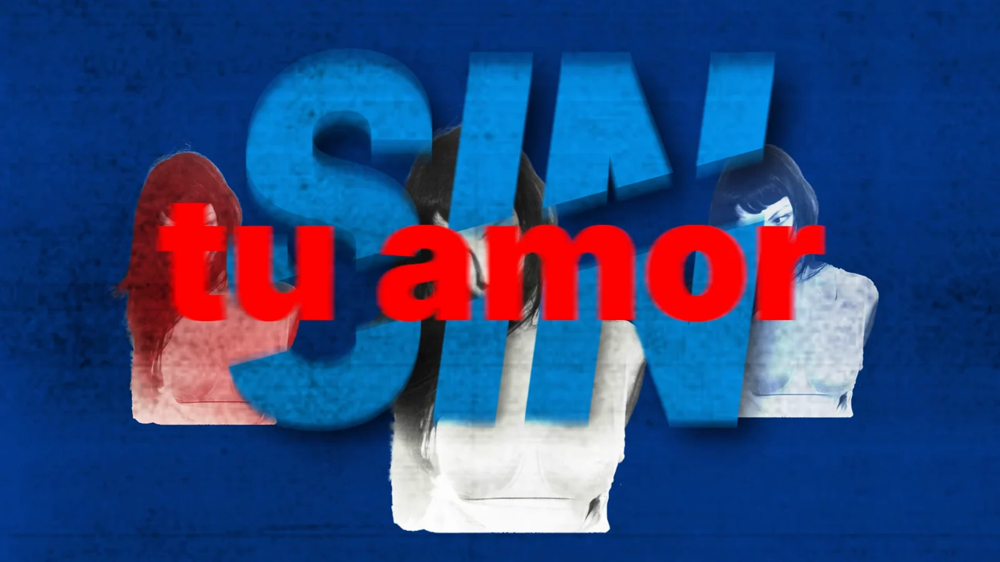
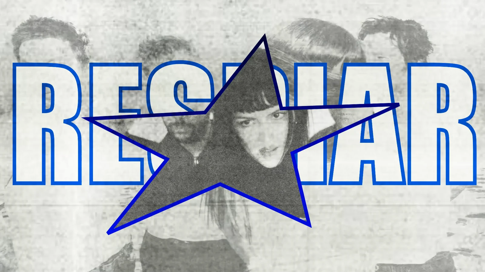
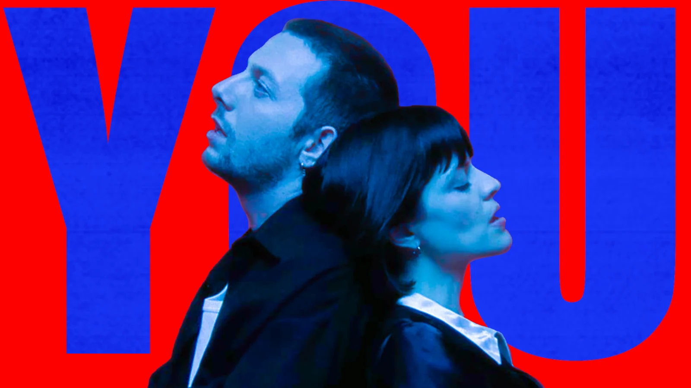
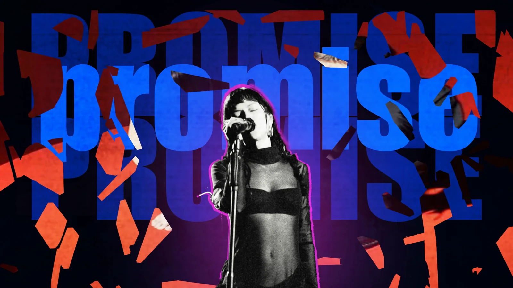
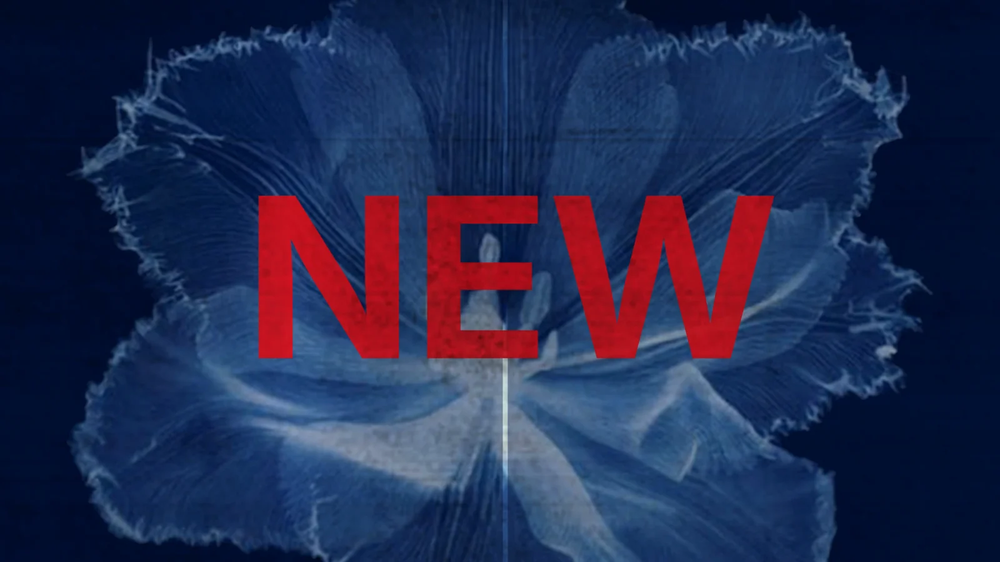
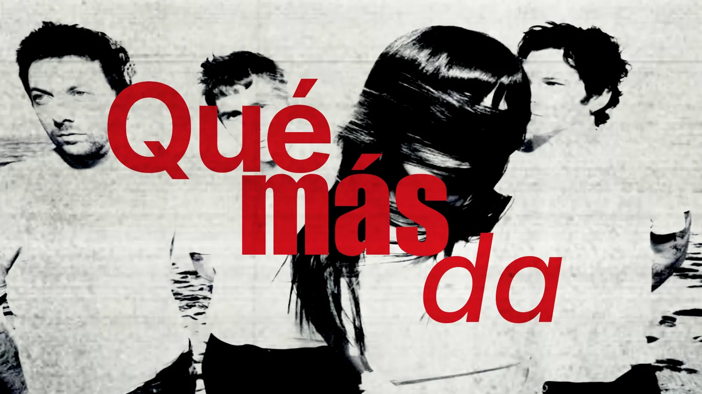
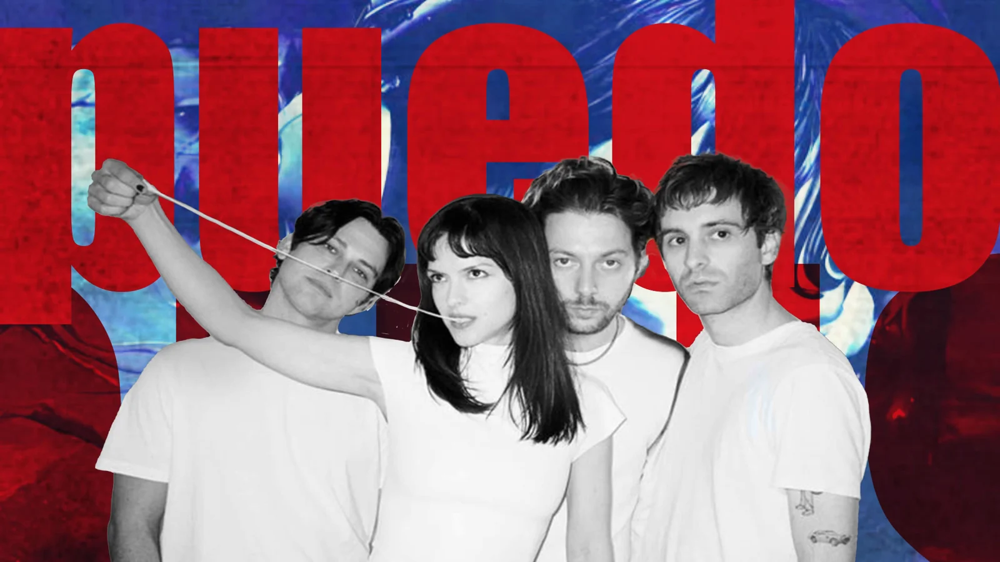
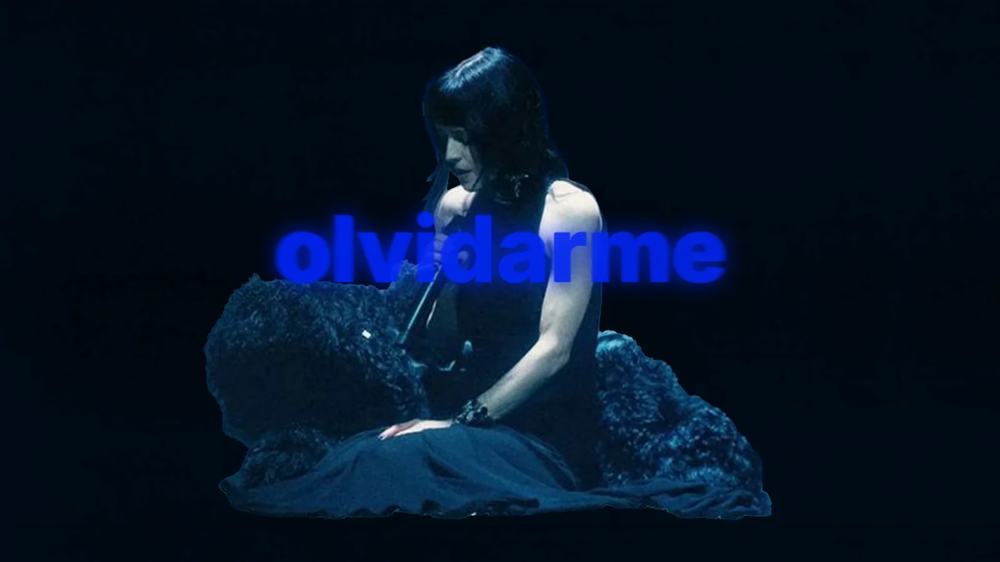
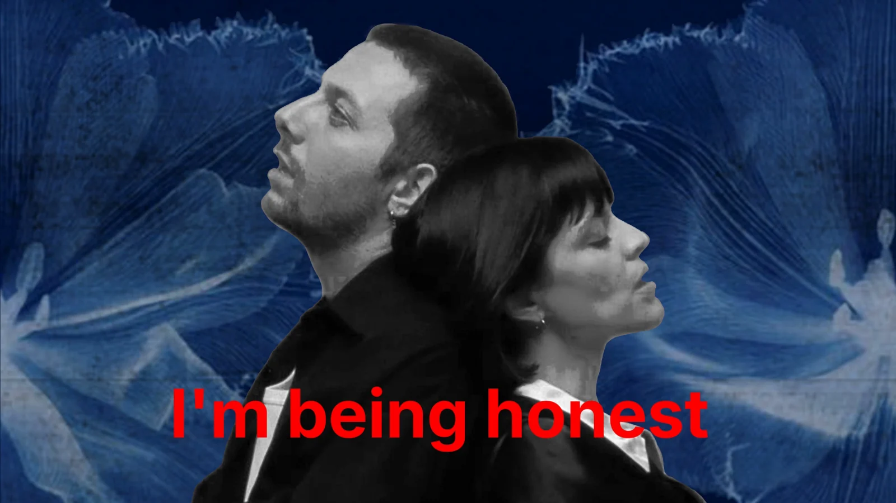
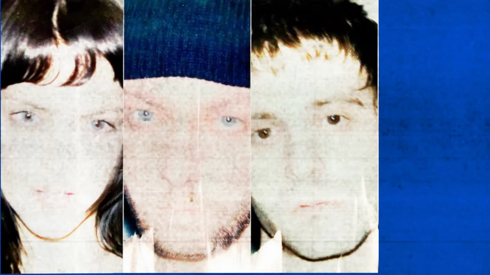
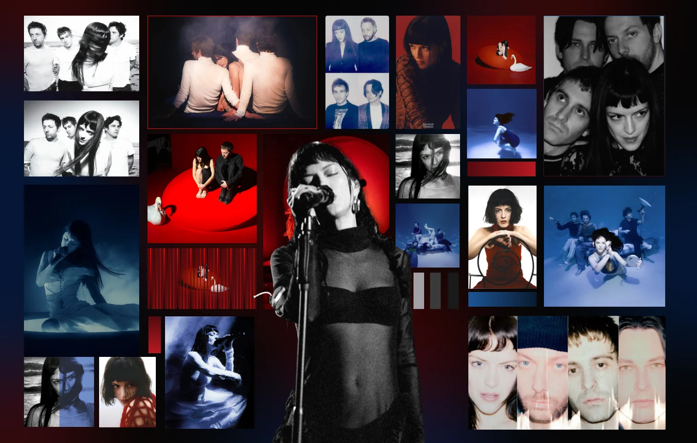
Moodboard
Blue against red
Everything on the moodboard grows out of the band's three album covers, Cinema, Submarine and the Nobody New single. Together they share one clear atmosphere that translates into a blue-red palette.
I made sure the board shows the whole band and not only María, the singer. These images give me a feeling of calm, and that calm is exactly what I wanted to carry into the clip.
Colour
Two warm, two cold, and the dark in between
A bright red and a deep blue lead, each with a darker and a lighter partner. Black and two greys give every scene room to breathe.
Typeface
Inter
One typeface for the whole clip, used heavy and big so the words become shapes. Bold for the quiet lines, Extra Bold and Black when the song gets louder, and italics when a line has to move.
Siento que me cuesta ya
Siento que me cuesta ya
I'm being honest
I'm being honest
There's nobody new
There's nobody new